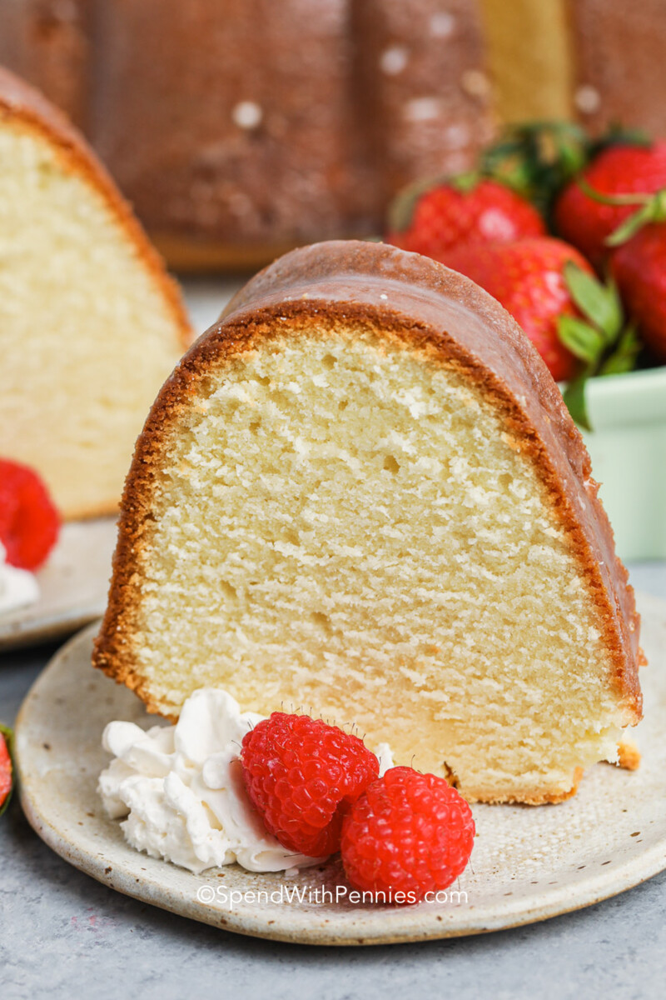

01/Feb
Cream Cheese Pound Cake
Looking for a tasty dessert idea? Try using cream cheese in place of some of the butter in a pound cake.This Cream Cheese Pound Cake is a fun and unique sweet treat!
Usually when I pull out butter and cream cheese, it means I'm making a cream cheese frosting. But not this time. This time, the butter and cream cheese went into this Cream Cheese Pound Cake.
Now I know the thought of using cream cheese in a cake (as opposed to a frosting) might sound a bit odd. But I can tell ya that it's worth trying!
The cream cheese adds an extra layer of richness to the pound cake - as if pound cake needed it, right? I absolutely love pound cakes. I'd probably put them in my top 5 list of favorite desserts.
From store-bought versions to a variety of homemade versions, I've certainly eaten my fair share of pound cake over the years.
This Cream Cheese Pound Cake is definitely tasty. I wouldn't say that the cream cheese flavor is super noticeable, but you will notice the overall richness of this cake.
It's good. Like really good. (It also uses a whole ton of sugar, eggs and butter…so that helps, too!)
Several years ago, my sister posted a recipe for Cream Cheese Cookies. Those cookies have become one of the most popular recipes on her blog -and for good reason!
The cream cheese replaces some of the butter in the recipe to yield a fluffy and delicious cookie. I decided to try the same concept with a pound cake instead.
As with those cream cheese cookies, I found that using cream cheese in a pound cake yielded a much fluffier cake. Don't get me wrong - it's still a dense cake.
It is a pound cake after all!
However, as it was baking, this pound cake used every bit of my 12-cup Bundt pan.
Had the pan been any smaller, I would've been picking bits of pound cake out of the bottom of my oven. (That's not high on my list of things to do!)
I do highly recommend this cake. I opted for a hefty amount of vanilla extract as the only flavor here…mainly because a good vanilla pound cake is my jam.
But I could totally see using a combination of vanilla and almond extract, or perhaps adding a large pinch or two of lemon zest.
In keeping with the simple approach, I went with a dusting of powdered sugar for the top of this pound cake. However, a glaze would work well, too.
No matter how you serve it, a slice of this cake will be quite tasty! Oh, and side tip about leftover pound cake. We enjoyed this cake fresh, but even I can't eat an entire pound cake in 1-2 days.
You can freeze a portion for later, but if you find yourself with pound cake that's a couple days old?
Toss a slice into the toaster oven! The edges will get slightly crispy for a delicious treat.I hope you enjoy this dessert as much as we did!